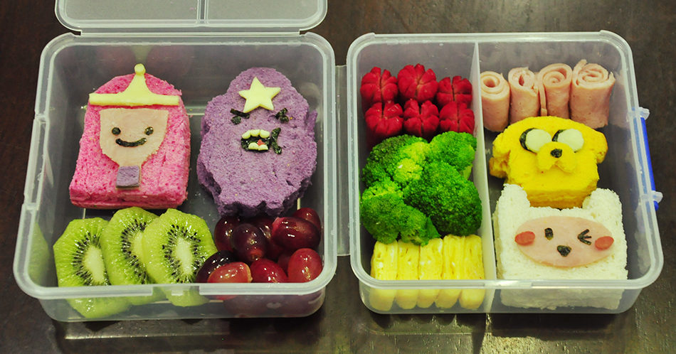

Drupal 8 Module Development
A guided tour
Nick Selvaggio | Sego Solutions
A little about us.

Hi! I'm Nick.
I'm a Managing Partner @

Hi! I'm Mike.
I'm a Managing Partner @

Thank you to the organizers of NEDCamp!
About Drupal LI
Join your local community!
Next Meetup is Wed, May 4th
Try Drupal
We also did a podcast series: Talking Drupal Podcast
A little about you.
What are we doing today?
- Quick Overview of Drupal Landscape
- Tips on Tools
- Get our environment spun up!
- Review the structure of a D8 application.
- Dive into a basic module example
- Break for lunch @ 12:30
- Create a module with a custom block and more! (thanks @tedbow for role_notices module!)
Let's talk about Drupal 8
Where have we come from?
Our many stages of evolution

Where are we now?
A revolution has happened!

Getting off the island.
What components is D8 using?
Symfony Components (HTTP Foundation, Routing, Dependency Injection, YAML, etc)
Doctrine Annotations
Twig theme system
PHP Unit for testing
For a full list:
/core/composer.json
Who using Drupal 8 now?
Memorial Sloan Kettering Cancer Center (MSK)
One of the largest cancer centers in the United States, launched the new mskcc.org in May. It chose Drupal 8, even when the software was still in its beta phase, to help extend the reach of its "More Science. Less Fear" campaign.
Johnson & Johnson
Partnered with IBM, Apple and Medtronic to launch Care Advantage, a personal concierge service to prepare patients for knee surgery and to help them deal with its after effects.
CH2M
CH2M is a global corporation that works to keep governments, infrastructure, and environments sustainable. It uses Drupal 8 to present and prove its capabilities.
Many, Many, Many More
Tips on Tools
- You will want a robust IDE (PHPStorm, Eclipse, Netbeans)
- Install and setup XDebug with your IDE
- Drupal Console
- Get acquainted with the Web Profiler module packaged with Devel
Lets dive in!

Play Along!
StackStarter.io/spin
Spin Code: #nedcamp
Under the hood
We can do alot with just core. Let's see how we can extend.

File Structure
Settings.php and friends
Make our lives easier with Drush
What about Drupal Console?
Lets write some code!
Stucture of a module
/modules/custom/hello/hello.info.yml
name: Hello
description: A friendly Drupal 8 module
type: module
core: 8.x
Modules now live in the /modules directory
We don't need a .module file anymore!
Lets make a Page...
Without hook_menu!
/**
* Our first Drupal 8 controller.
*/
namespace Drupal\hello\Controller;
use Drupal\Core\Controller\ControllerBase;
class HelloController extends ControllerBase {
public function sayHi() {
return array(
'#markup'=>"Hello Drupal 8!",
);
}
}
/modules/custom/hello/hello.routing.yml
hello.sayHi:
path: '/hello'
defaults:
_controller: '\Drupal\hello\Controller\HelloController::sayHi'
requirements:
_permission: 'access content'
Lets add a menu link
/modules/custom/hello/hello.links.menu.yml
hello.sayHi:
title: "Say Hi"
route_name: hello.sayHi
menu_name: tools
What about theming our content?
This will look familar
/modules/custom/hello/hello.module
/**
* Implements hook_theme
*/
function hello_theme() {
$theme['say_hello'] = array(
'variables' => array(),
'template' => 'say_hello',
);
return $theme;
}
/modules/custom/hello/templates/say_hello.html.twig
<section>
{% trans %}
Hello!
{% endtrans %}
</section>
/**
* Our first Drupal 8 controller.
* Lets say HI
*/
namespace Drupal\hello\Controller;
use Drupal\Core\Controller\ControllerBase;
class HelloController extends ControllerBase {
public function sayHi() {
return array(
'#theme'=>'say_hello',
);
}
}
What about Forms?
Very similar pattern!
/modules/custom/hello/src/Form/HelloRequestForm.php
/**
* @file
* Contains \Drupal\hello\Form\HelloRequestForm.
*/
namespace Drupal\hello\Form;
use Drupal\Core\Form\FormBase;
use Drupal\Core\Form\FormStateInterface;
class HelloRequestForm extends FormBase {
/**
* {@inheritdoc}.
*/
public function getFormId() {
return 'hello_request';
}
/**
* {@inheritdoc}.
*/
public function buildForm(array $form, FormStateInterface $form_state) {
$form['phone_number'] = array(
'#type' => 'tel',
'#title' => $this->t('Your phone number')
);
$form['actions']['#type'] = 'actions';
$form['actions']['submit'] = array(
'#type' => 'submit',
'#value' => $this->t('Give me a call'),
'#button_type' => 'primary',
);
return $form;
}
/**
* {@inheritdoc}
*/
public function validateForm(array &$form, FormStateInterface $form_state) {
if (strlen($form_state->getValue('phone_number')) < 3) {
$form_state->setErrorByName('phone_number', $this->t('The phone number is too short. Please enter a full phone number.'));
}
}
/**
* {@inheritdoc}
*/
public function submitForm(array &$form, FormStateInterface $form_state) {
drupal_set_message($this->t('Your phone number is @number', array('@number' => $form_state->getValue('phone_number'))));
}
}
/modules/custom/hello/hello.routing.yml
hello.requestHi:
path: '/hello/request'
defaults:
_form: '\Drupal\hello\Form\HelloRequestForm'
requirements:
_permission: 'access content'
Lunch time!
Let's build our first real module together!
Go to this url for the training exercise:
Today we covered:
- Learned about the history of Drupal
- Reviewed some helpful tools for D8 Development
- Took a look at Drupal 8 project structure
- Learned about YAML, Routing, Controllers, Plugins, Services, & OOP in Drupal
- Created our first module!